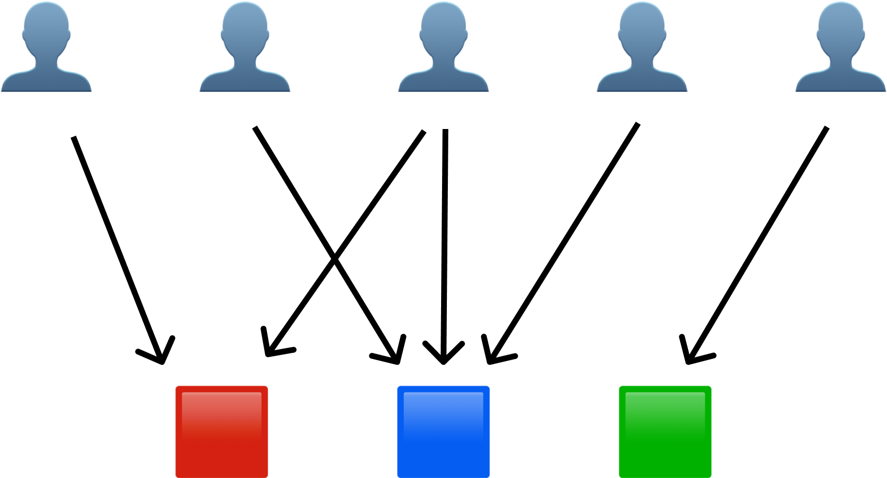
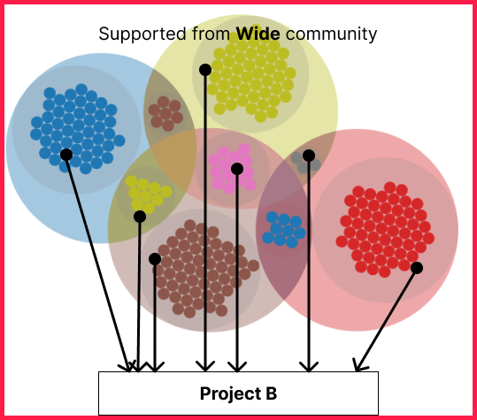

What's the Plural QF?
Nomal QF
Plural QF

Normal QF has essential risk from Collusion.
QF, originally designed to efficiently fund public goods, is now used by both private and public entities QF, while effective, is particularly vulnerable to collusion and Sybil attacks, in which individuals or groups exploit the system for their own benefit Initial proofs of QF's effectiveness are based on the assumption that participants are isolated, self-interested agents. Even under normal conditions of weak human cooperation, this assumption breaks down, suggesting that QF is suboptimal. Thus, QF is susceptible not only to explicit attacks, but also to normal human behavior that deviates from the original assumption.
Plural QF is using social diversity of participate, which minimizing the risk of collusion and more democratic way.

Pairwise Coordination subsidies üìê
Vitalik “Pairwise Coordination subsidies” (AKA Plural QF) in ethresearch at 2019. in this post, discusses a subsidy formula and proposes a new design that is more robust to the possibility of coordination between agents.
the design involves a local coefficient for each pair of agents and assumes that the amount of funds a specific pair of agents put towards the same projects is itself evidence of how coordinated they are.

Plural QF gradually increase cooperation across differences and mute contributions between homogeneous and more highly cooperative groups
tldr;

